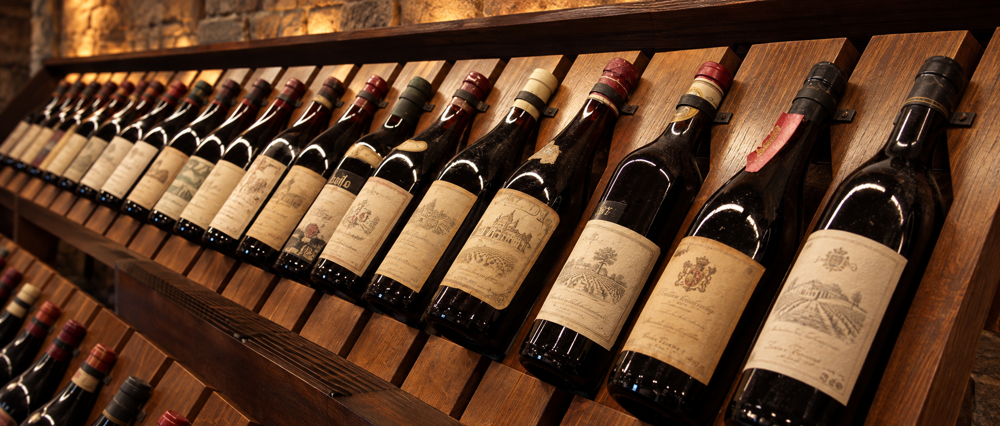

Tradição, qualidade e cuidado em cada escolha.
Há mais de 15 anos, a Vinheria Agnello seleciona vinhos de alta qualidade para tornar cada momento ainda mais especial.
Trabalhamos com rótulos nacionais e internacionais, provenientes de vinícolas como a brasileira Vale dos Ipês, a italiana Vila Monteluce, a portuguesa Quinta das Oliveiras e a argentina Bodega Caminos del Sol.
Cada garrafa é armazenada com muito cuidado, respeitando as condições adequadas de temperatura, iluminação e umidade. Dessa forma, preservamos a qualidade, os aromas e os sabores de cada vinho até ele chegar à sua mesa.
Muito além de vender vinhos, queremos ajudar nossos clientes a conhecer esse universo. Nossa equipe oferece orientações sobre diferentes tipos de uvas, regiões produtoras, características dos rótulos e combinações com alimentos. Seja para uma comemoração, um jantar em família ou para quem está começando a apreciar vinhos, estamos sempre prontos para ajudar na escolha.
Conheça o processo de produção do vinho, desde o plantio até a sua mesa
Trabalhamos com vinícolas reconhecidas pela qualidade de seus produtos e pelo cuidado presente em cada etapa da produção. Desde o cultivo e a colheita das uvas até o armazenamento e o transporte das garrafas, todo o processo é realizado com atenção para preservar as características de cada vinho. Assim, garantimos que cada rótulo chegue à mesa do consumidor com a qualidade e a tradição que fazem parte da experiência da Vinheria Agnello.